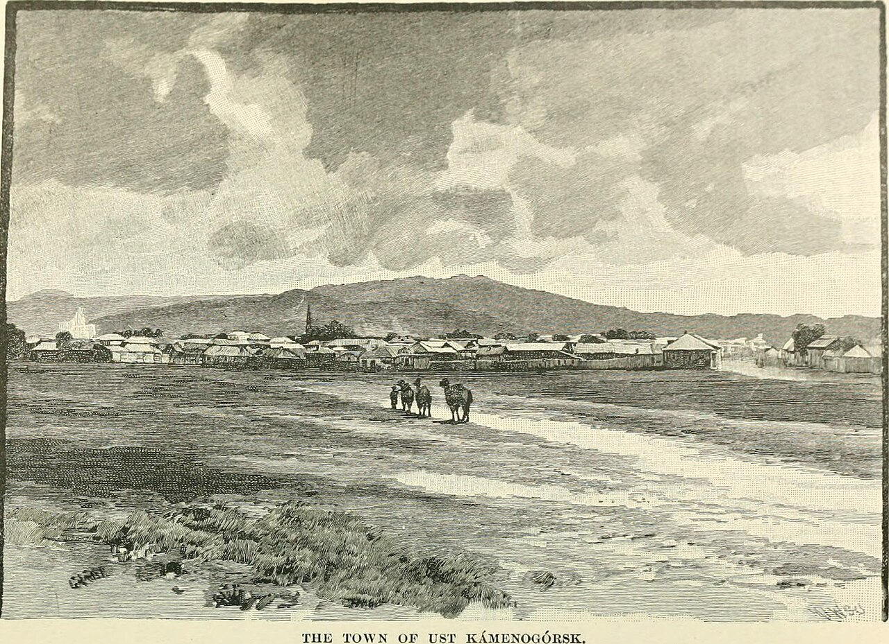
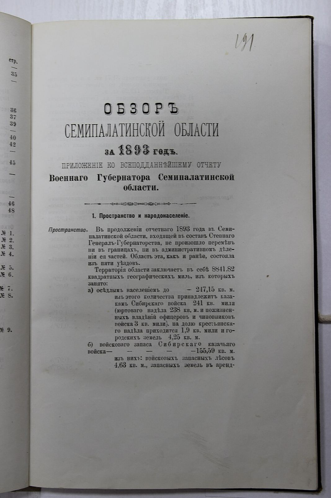
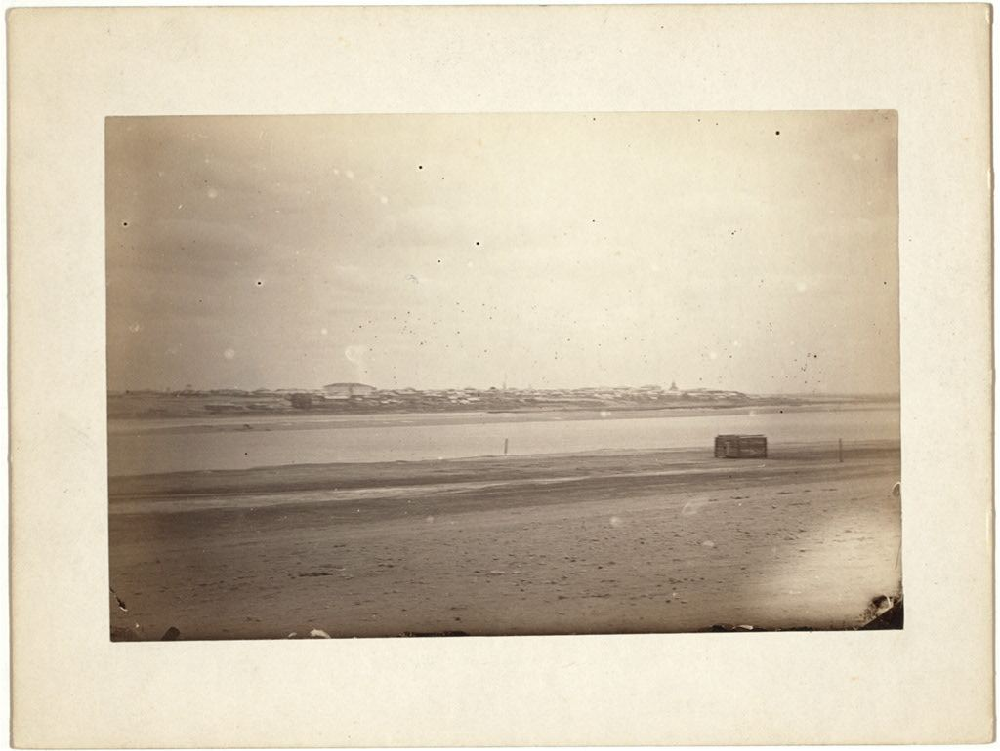
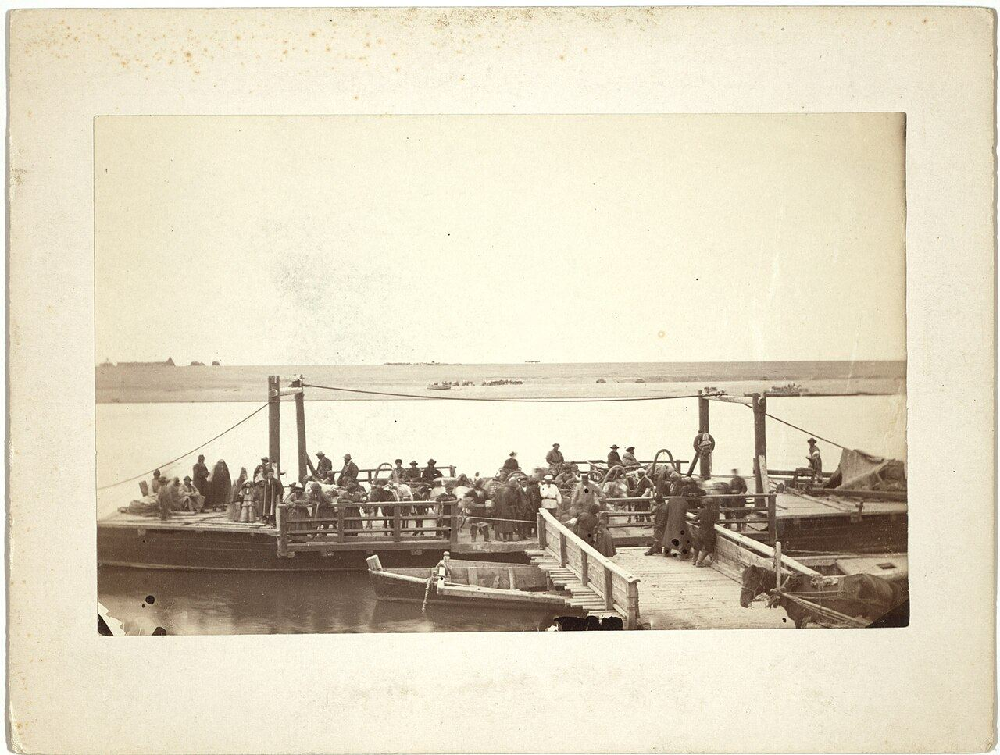
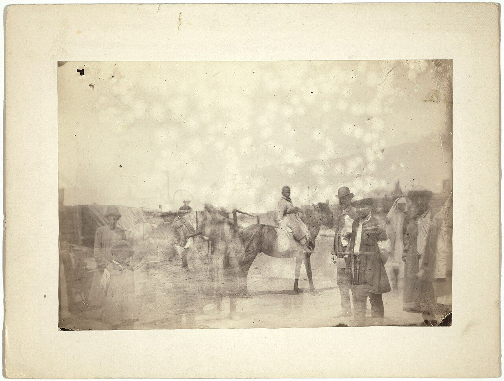
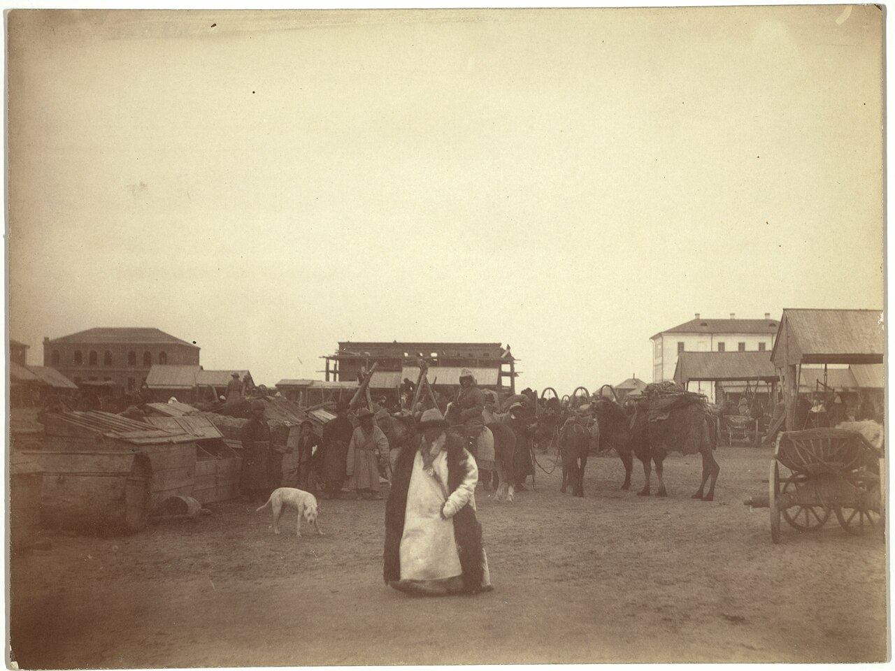
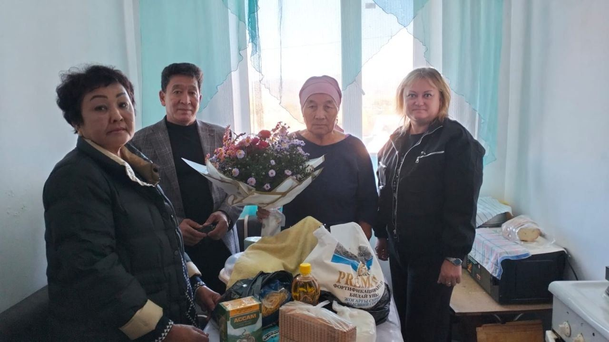
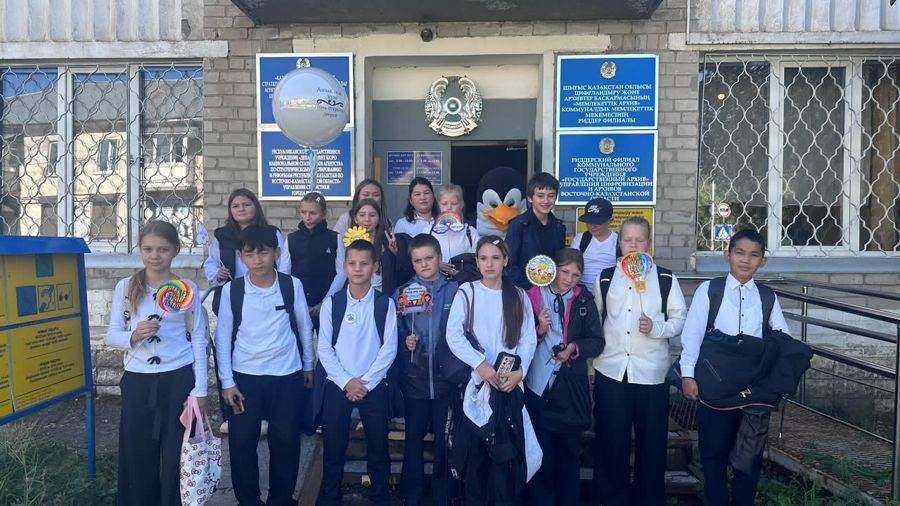
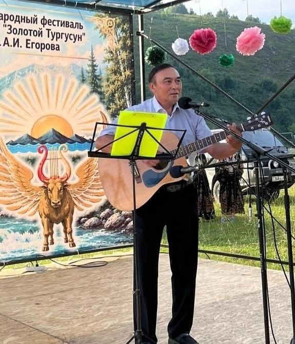
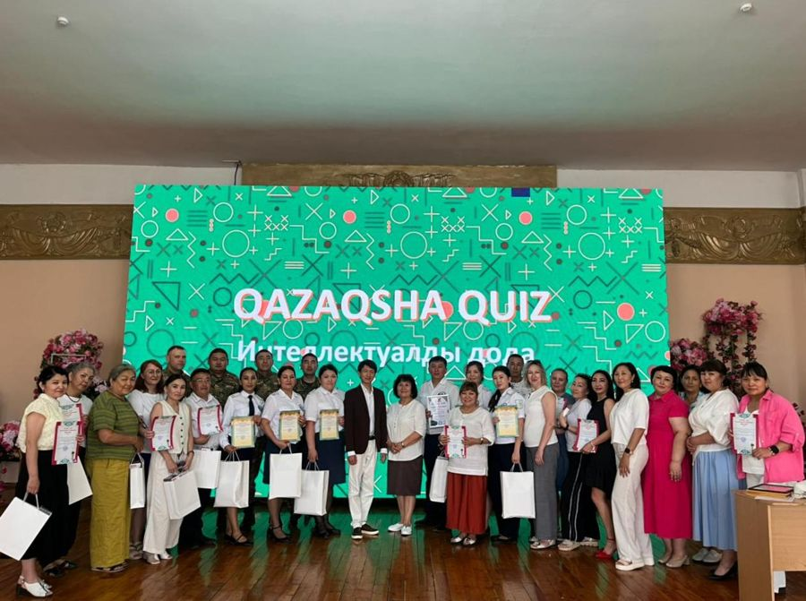

Онлайн-выставка
Усть-Каменогорск, 1885: город глазами путешественника
Гравюры и снимки Иртыша, паромов, базаров и аулов из путевых записей Джорджа Кеннана с подписями по документам фондов.
Документы региона с 1940 года

Гравюры и снимки Иртыша, паромов, базаров и аулов из путевых записей Джорджа Кеннана с подписями по документам фондов.

Фонд, опись, дело: поиск по шифру, названию, датам и именам, просмотр скана без регистрации.

Старые снимки города с привязкой к описям и документам, которые их объясняют.

Усть-Каменогорск, Риддер, Алтай, Зайсан, Жарма: адреса, телефоны, часы приёма и состав фондов.

Помощник отвечает по архивным описям и называет шифры дел, на которых основан ответ.

Режим работы, перечень документов с ограничением доступа и порядок ознакомления.
Введите название, шифр, имя или место
Расширенный поиск по шифру и датамУслуга «Выдача архивных справок, копий архивных документов или архивных выписок» оказывается через e-vko.gov.kz / egov.kz и ЦОН; лично её можно получить в архиве.
Порядок полученияПрейскурант № 289 и порядок обращения. Заказ, расчёт и оплата на сайте не производятся.
ПрейскурантПутеводитель по личным фондам региона.
Записи о рождении, браке и смерти, поиск по году и приходу.
События и места региона со ссылками на дела.
Объяснение архивных терминов: фонд, опись, дело, лист.

01.10.2026 года в рамках празднования Дня пожилого человека руководитель филиала района Алтай КГУ «Государственный архив Восточно-Казахстанской…

21.09.2026 года в филиале Алтай КГУ «Государственный архив ВКО» управления цифровизации и архивов ВКО состоялся «День открытых дверей». В качестве…

В связи с ежегодным проектом «Архив и будущее поколение» 18 сентября 2026г. В Риддерском филиале КГУ «Государственный архив ВКО» управления…

04.09.2026 года в филиале района Алтай КГУ «Государственный архив Восточно-Казахстанской области» управления цифровизации и архивов ВКО состоялась…

Фестиваль «Золотой Тургусун», названный в честь одной из самых известных повестей писателя, журналиста и истинного певца Александра Ивановича…

19 июня 2026 года сотрудники филиала Алтай КГУ «Государственный архив Восточно-Казахстанской области» управления цифровизации и архивов…
Иллюстрации: Wikimedia Commons, общественное достояние. Гравюра «The town of Ust Kámenogórsk» из книги George Kennan, «Siberia and the exile system», 1891; фотографии Семипалатинска и окрестностей, 1885 (Library of Congress, LCCN 99615482, 99615488, 99615489, 99615508); титульный лист «Обзор Семипалатинской области за 1893 год» (CC0). Новости: e-arhiv.vko.gov.kz.